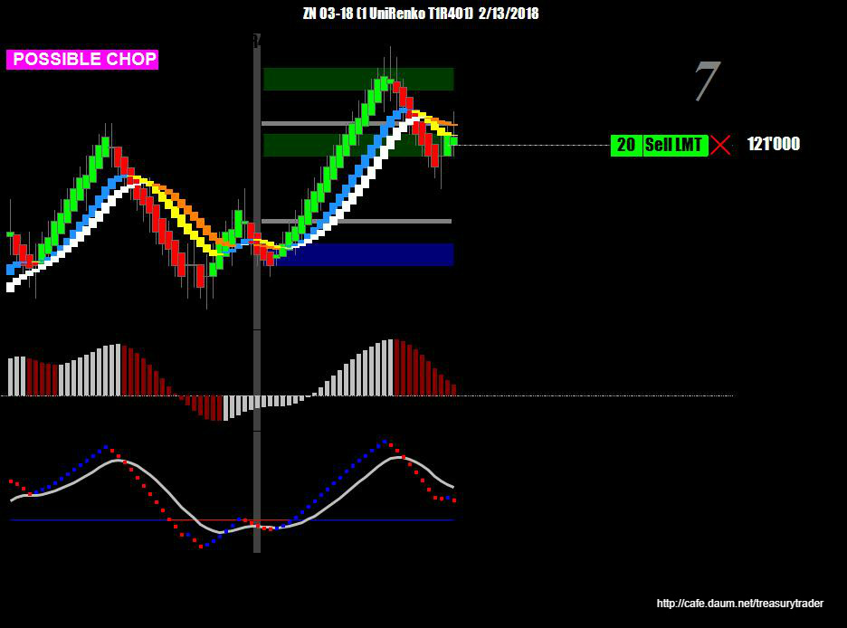
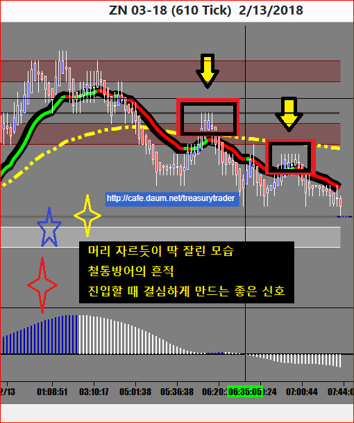
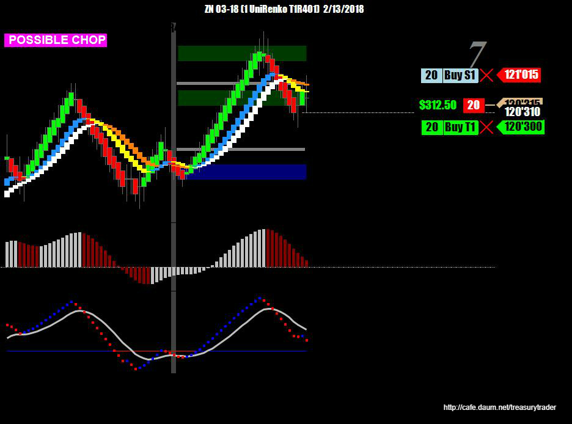
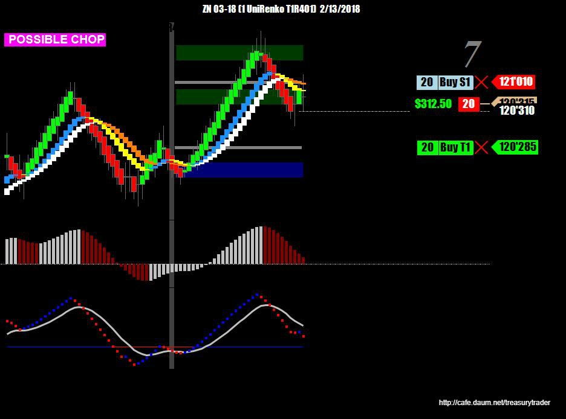
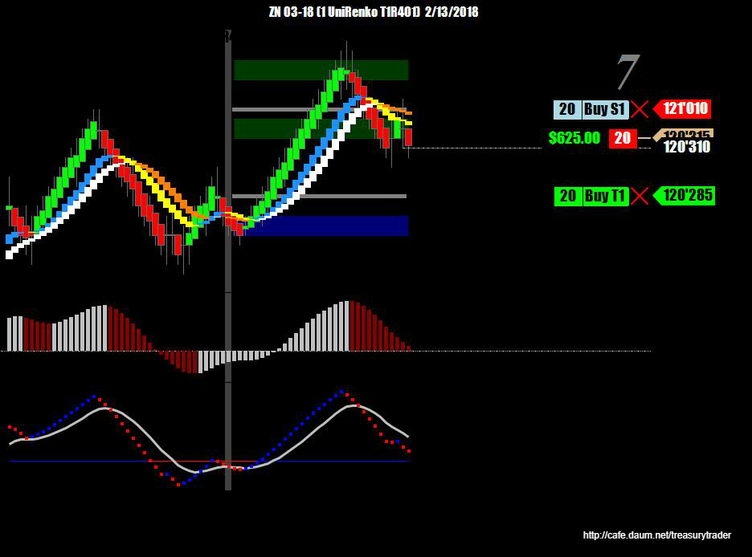
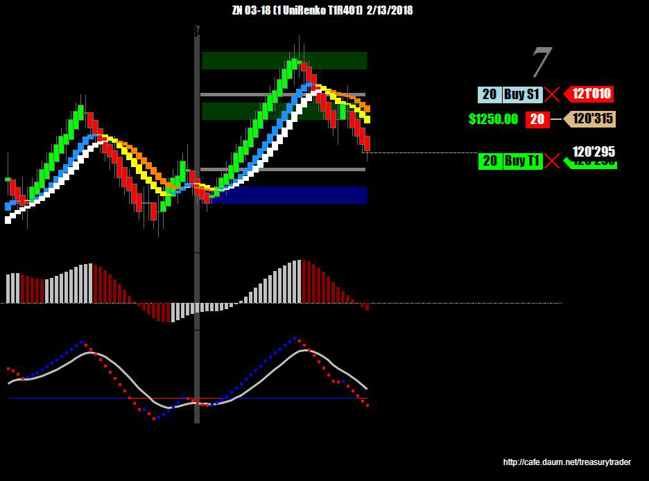
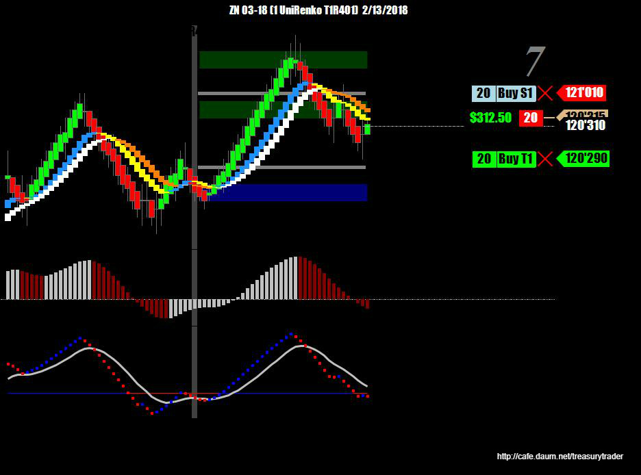
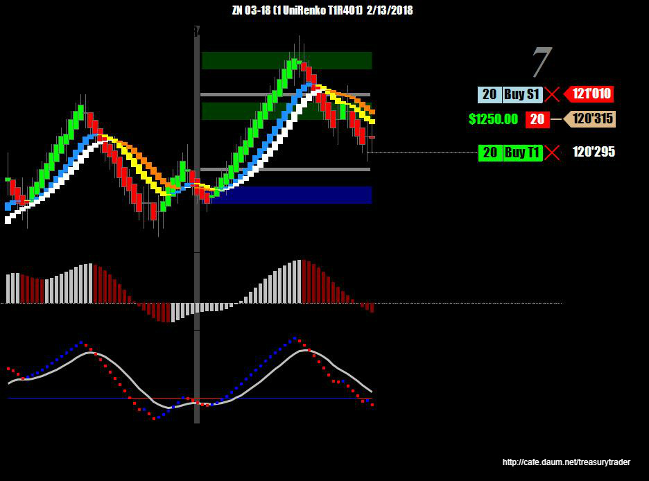
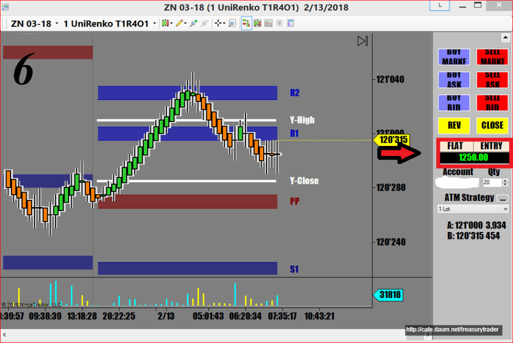

며칠동안 큰폭의 스윙을 하던 증시가 조금 calm down 된듯한 느낌
덕분에 국채는 거의 수면상태임
증시 오픈하고 나서 증시도 역시 거의 미동도 없음
이럴땐 작은 진폭 끝에서 가능한 한 제일 좋은 가격에 사서(말은 쉽네) 조금만 먹고 나오는 전술로 대응
진입 -눌림목에서 받아침..
주문냄

진입할 때 가슴이 두근거릴 때 아래챠트처럼 뭔가 확인 가능한게 있으면 심장병 예방에 조금 도움이 됨
분봉에서는 이런 그림 잘 안보임 . 매매에서 틱챠트를 써야하는 이유중 하나

계약체결

아래 피봇지지까지 갈것 같아서 landing point 조정



헉 !!! 한틱 남겨놓고 갑자기 위로 솟구치기 시작( 위쪽에서 한번 더 매도 때릴까 고민하다가 참음/물타기 금지법)

다행히 다시 하락.. 마음을 비우고 곧바로 익절..

오늘장은 정말 안움직임
지금부터는 관망모드로 전환..
추세가 없이 횡보하면서 적게 진동하는 장세에서는 안들어가는게 좋습니다..
돈버는것보다 더 중요한게 자산을 지키는것.
적은 수입에도 늘 감사합니다
